UX/UI Design · Website Redesign
Škola biciklizma Zagreb
A redesign of the Škola biciklizma Zagreb website, focused on clearer information architecture, simpler navigation and easier access to programmes, prices and membership.
Project information
The challenge
The existing WordPress template mixed news, programmes, training details and sign-up forms on long, dense pages. Visitors looking for a programme, its price or how to join had to scroll through unrelated content, and the most important action, signing up, was easy to miss.
My approach
I started by reviewing the existing pages and grouping content by what visitors come to find. Wireframes set a clear order of sections for each key page before any visual design: programmes and prices first, membership highlighted, and sign-up forms placed right after the information they relate to. A consistent navigation and footer, a stronger visual hierarchy and layouts adapted for mobile tie the pages together.
The project confirmed that many usability problems on content-heavy sites are structural: once the content is in the right order, the visual design has far less to fix.
Process
The existing website
The original pages: long, dense layouts where programmes, prices and sign-up compete with news and partner content.


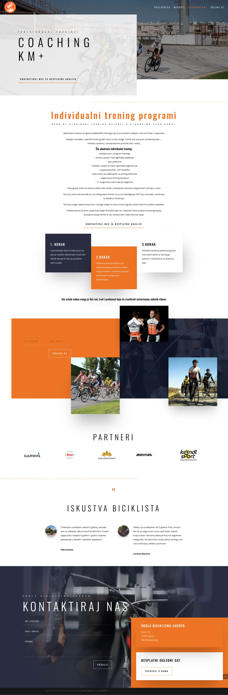
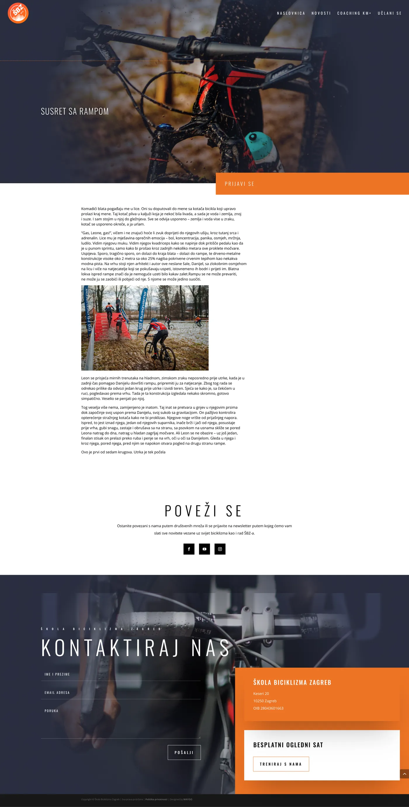
Wireframes
Each key page restructured around a single purpose, with sections ordered by importance before any visual design.
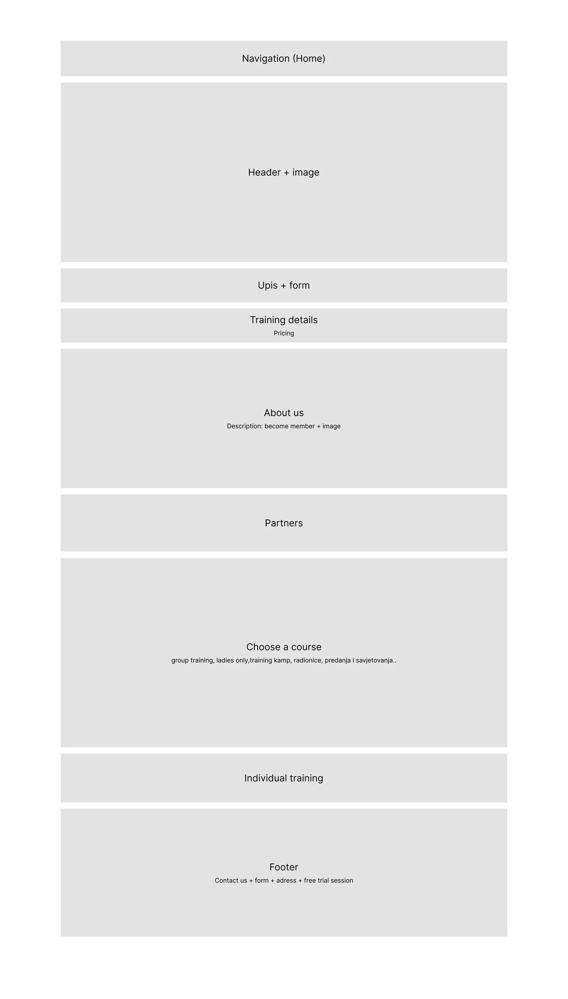
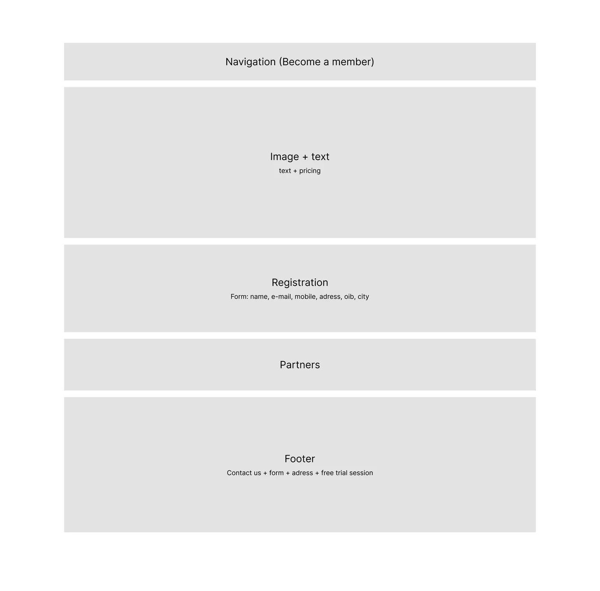

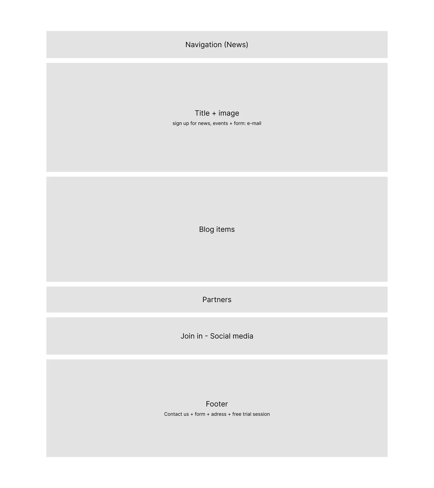

Final design

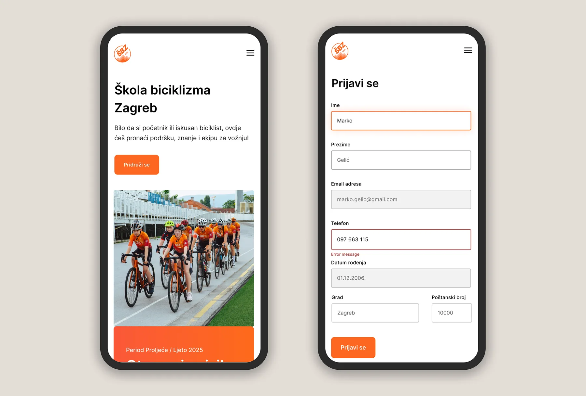
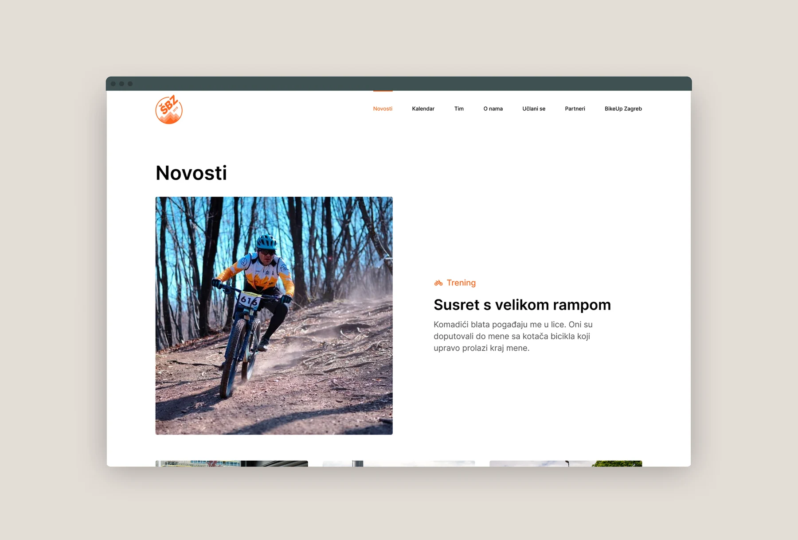
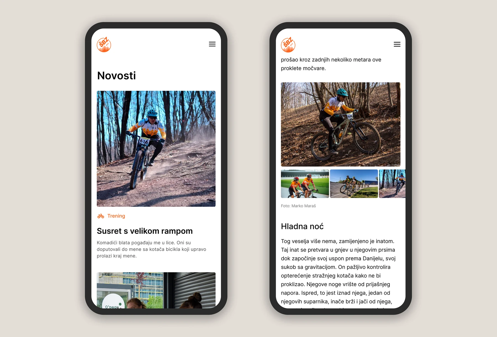
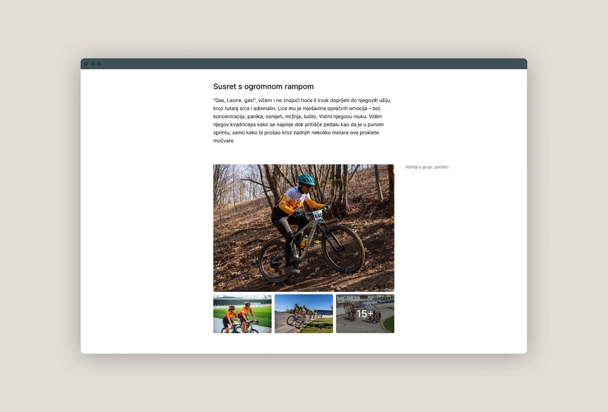
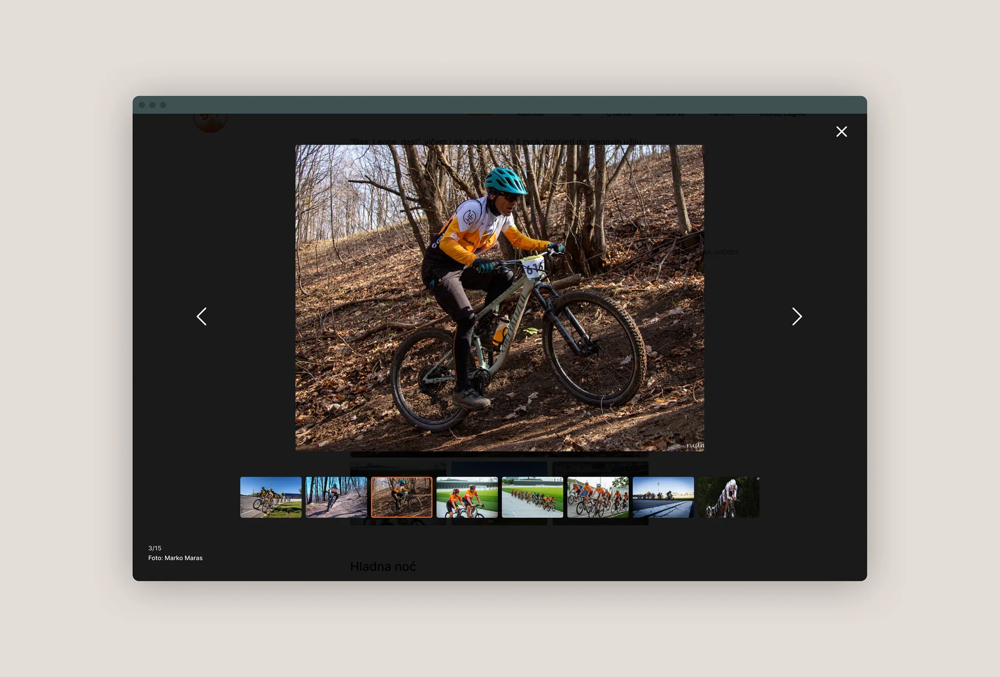
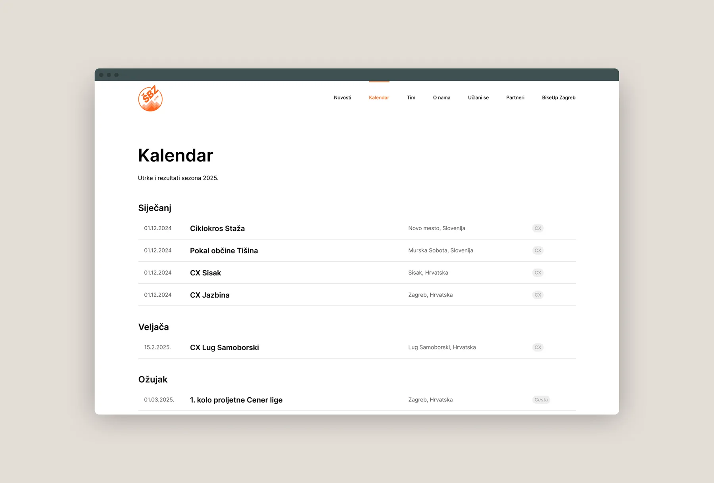
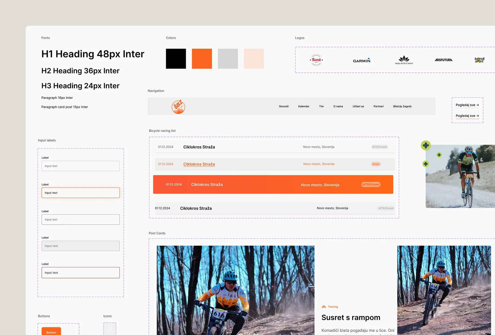